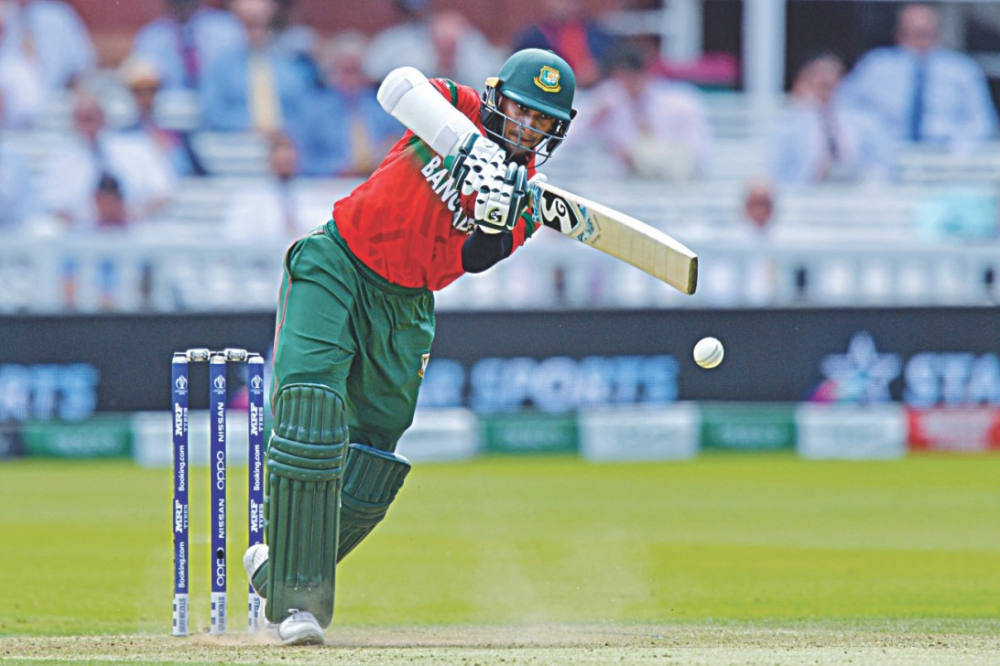

My Hobbies
My favourite hobby is reading. I enjoy reading a book when i am free. I started to do it when I was nine years old .
I enjoy reading because I like to explore my imaginative world.

My Favourite Pastimes
My favourite pastime is playing cricket. Five years ago, my father asked me to watch a crickrt match.
After that match, I became interested in the game.

My Favourite Books
I have read many books. Of all books, I like “Himu” most the name of the author of this book is Humayun Ahmed.
He is a very famous Bengali writer. Once I start reading it I cannot leave it until I have finished it.

My Favourite Movies
My favourite movie is 3 Idiots.This is a story of the three engineering students in Imperial College of Engineering who finds their friendship as making themselves like idiots but learning from it. The main casts were Farhan Qureshi acted by R. Madhavan, Raju Rastogi acted by Sharman Joshi and Ranchoddas Shamaldas “Rancho” Chanchad acted by Aamir Khan.The main reason why I like love film, inspite of being a comedy carries a message and it’s about humanity.
Read more on Brainly.in - https://brainly.in/question/2334699#readmore
Return to homepage